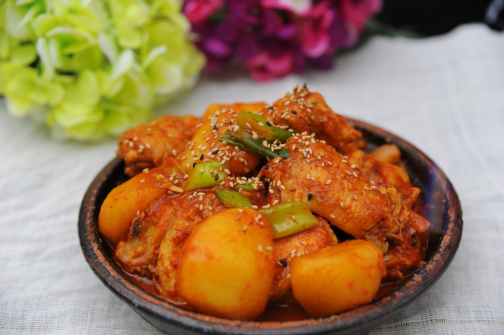

식재료 이모저모 |
|
|---|---|
닭볶음탕
닭볶음탕이란 닭고기를 뼈채로 조각낸(토막낸) 부분(닭도리)를 양념해 감자와 함께 끓여낸 한국 요리이다. 양념을 많이 쓰고 볶는 과정이 추가되는 점에서 닭곰탕과 구분된다. 조선시대에도 닭찜, 닭볶음, 닭조림 등 비슷한 요리가 언급되었고 고춧가루를 쓰지 않는 대신, 간장과 마늘, 생강, 후추를 사용했으며 조리 방식은 지금과 큰 차이가 없었다.
본디 대중적으로 '닭도리탕'이라고 불리고 있었지만, 국립국어원에서 닭도리탕의 도리가 일본어 '鳥(토리)'에서 왔다는 황당한 주장을 바탕으로 닭볶음탕으로 명칭을 변경, 공중파 등에서는 닭볶음탕이라 부르고 있다. 하지만 정작 일본에서는 한국어 '닭도리탕'을 음역해서 'タットリタン'으로 부른다. 일본 위키백과의 タットリタン 문서. 이에 대한 논란이 있어 특히 인터넷 커뮤니티에서는 국립국어원 탁상행정의 대표적인 사례로 유명하다. |
|